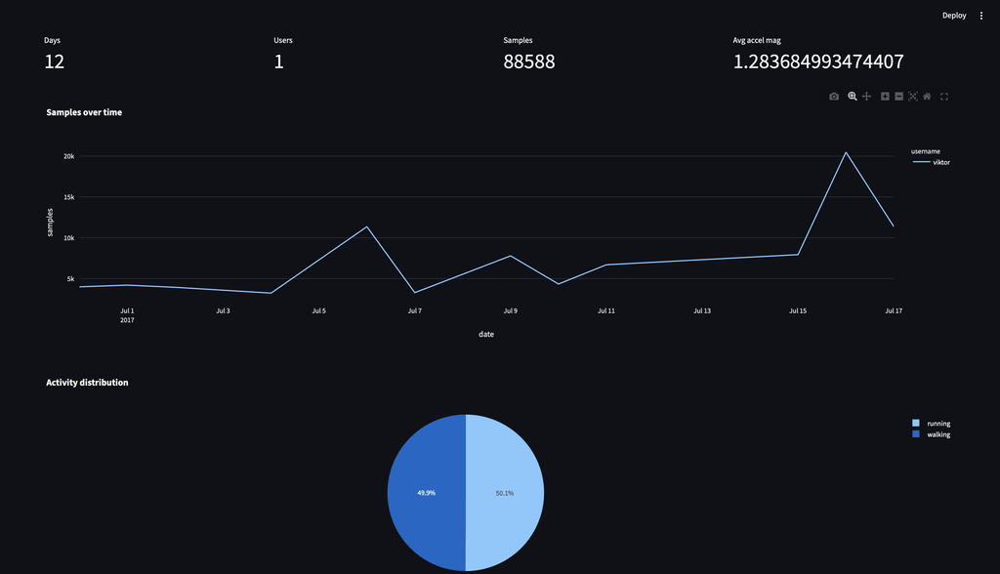
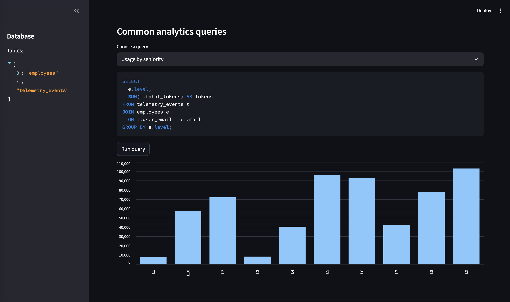
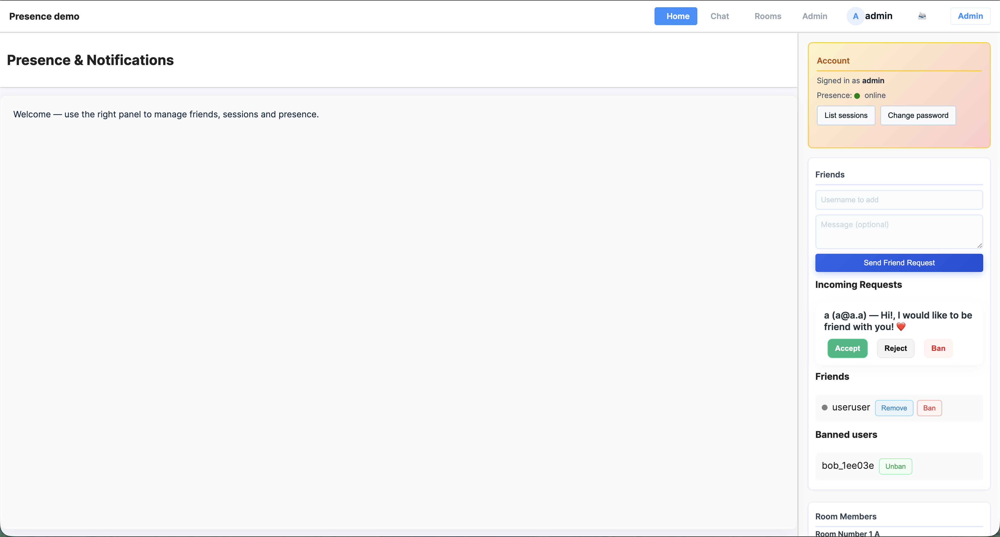

Amir Zare Backend & Data Engineer
Building scalable data pipelines and backend systems using Python, FastAPI, and modern data tools.
I design and build reliable data platforms that deliver streaming pipelines to improve observability.
Available for full-time & contract roles — open to remote / hybrid
🥈 Selected Projects

Run/Walk Data Pipeline
Problem: CSV telemetry ingestion was slow and hard to query, blocking analytics.
Solution: Designed and built a production-ready pipeline (CSV → Parquet → DuckDB) orchestrated with Apache Airflow, with automated materialized transforms and daily reports for analysts.
Impact: Enabled daily materialized reports and sub-second queries for analysts. Converted raw CSV into compressed Parquet to cut storage and speed downstream processing. Automation reduced manual reporting time from hours to minutes and improved data quality visibility.
Tech: Python, Airflow, DuckDB, Parquet, Streamlit

Claude Code Analytics Platform
Problem: Disparate telemetry and no centralized analytics API; reporting was manual and slow.
Solution: Designed and built an analytics platform with FastAPI, DuckDB storage, and Streamlit dashboards to normalize JSONL telemetry and provide programmatic APIs for reporting.
Impact: Centralized telemetry and programmatic APIs reduced manual reporting and enabled reproducible dashboards. This enabled faster ad-hoc analysis and integrated programmatic access for downstream services.
Tech: Python, FastAPI, DuckDB, Streamlit, JSONL

Real-Time Chat Application with FastAPI
Problem: Need for a production-ready, low-latency web chat supporting concurrent users with secure sessions and moderation.
Solution: A production-style web chat built with FastAPI and SQLite (WAL) supporting multi-device sessions, real-time presence, rooms, private messaging, file sharing, and moderation. Docker-ready and tested with pytest & Playwright.
Tech: FastAPI, aiosqlite (SQLite WAL), Docker, JWT, JavaScript, Playwright
Skills
About
Software & Data Engineer with 6+ years building backend systems and production data platforms. I design reliable, observable, and cost-efficient data pipelines that move quickly from prototype to production, and I integrate AI-assisted workflows where they add value.
- End-to-end ETL/ELT and streaming pipeline design
- Workflow orchestration (Apache Airflow), data modeling, and analytics tooling
- Cloud-native deployments, infrastructure-as-code, and CI/CD
- Collaboration with analysts, ML engineers, and product teams
Experience
-
DataLayer — Founder / Software & Data Engineer Jan 2024 – Present · Yerevan, Armenia
- Founded DataLayer to deliver backend, analytics workflows, and data engineering solutions.
- Designed and implemented ETL/ELT pipelines using Python and Apache Airflow.
- Built ingestion, transformation, orchestration, and analytics workflows for crypto and business data.
- Developed backend APIs and analytics services with FastAPI; dashboards with Streamlit.
-
HireToDo — Software Developer Dec 2022 – Dec 2023 · Yerevan, Armenia
- Worked on backend and platform features for a hiring and payment platform using Laravel 9/10.
- Collaborated on frontend integrations (Vue.js / Nuxt.js) and designed GraphQL APIs.
- Applied clean architecture and SOLID principles; wrote PHPUnit tests to improve reliability.
-
Ardakan Float Glass Company — PHP / Laravel Developer Oct 2021 – Nov 2022
- Developed enterprise web applications and internal business systems using Laravel.
- Optimized database operations and handled large datasets (200k+ product records).
- Implemented service-oriented architecture and maintainability improvements.
-
Paziresh24 — PHP Developer Jun 2021 – Oct 2021
- Contributed to backend systems for a high-traffic healthcare platform and supported stability.
- Worked on performance optimizations and production application maintenance.
-
Mahya Pardaz Company — Web Developer (CakePHP) Aug 2019 – Jun 2021
- Built and maintained 15+ custom municipal and enterprise applications using CakePHP 4.
- Implemented backend business logic, mentored junior developers, and improved engineering practices.
Contact
Interested in hiring or collaborating? Email me at info@amir-zare.com, or connect using the icons below.